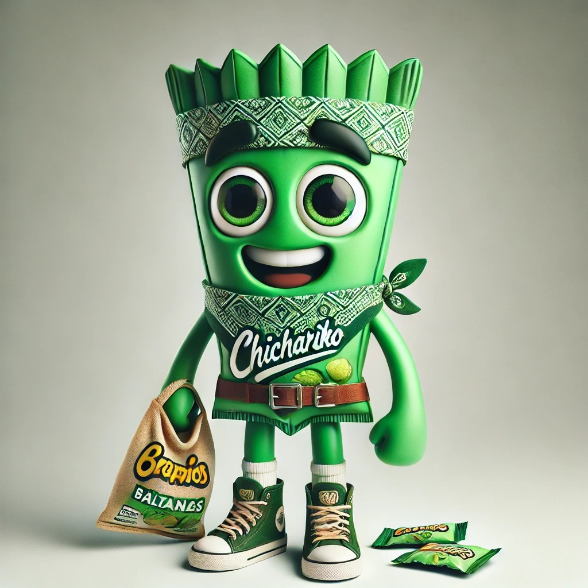

¿Quiénes somos?
En Chicharrikos impulsamos tu negocio con botanas naturales poniendo a tu disposición un canal de distribución confiable, eficiente y accesible en la CDMX. Te brindamos una gran variedad de botanas tradicionales y saludables que no vas a encontrar en ningún otro lugar.
